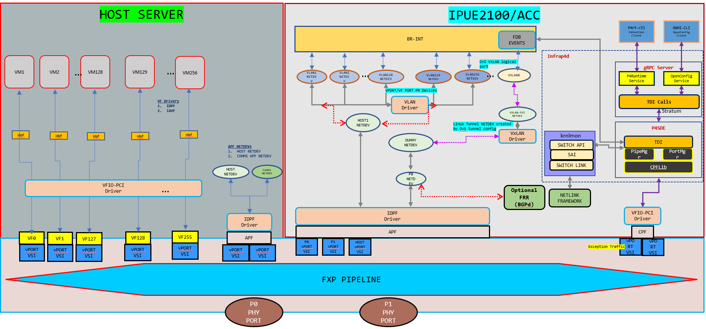

Linux Networking with FRR (ES2K)
This document explains how to run the Linux networking scenario on ES2K.
Topology

Notes about topology:
Four Kernel netdevs are created by default by loading IDPF driver during ACC bring-up. You can also create more than Four netdevs. For that, we need to modify
acc_apfparameter undernum_default_vportin/etc/dpcp/cfg/cp_init.cfgon IMC before startingrun_default_init_app.In
/etc/dpcp/cfg/cp_init.cfgfile also modify defaultsem_num_pagesvalue to the value mentioned in/opt/p4/p4sde/share/mev_reference_p4_files/linux_networking/README_P4_CP_NWS.vlan1, vlan2, …. vlanN created using Linux commands and are on top of an IDPF Netdev. These VLAN ports should be equal to number of VM’s that are spawned.
br-int, VxLAN ports are created using ovs-vsctl command provided by the networking recipe and all the vlan ports are attached to br-int using ovs-vsctl command.
System under test will have above topology running the networking recipe. Link Partner can have the networking recipe or legacy OvS or kernel VxLAN. Note the Limitations section before setting up the topology.
Create P4 artifacts and start Infrap4d process
Use Linux networking p4 program present in the directory
/opt/p4/p4sde/share/mev_reference_p4_files/linux_networkingfor this scenario.See Running Infrap4d on Intel IPU E2100 for compiling
P4 artifacts,bringing up ACCand runninginfrap4don ACC.
Creating the topology
The p4rt-ctl and ovs-vsctl utilities can be found in $P4CP_INSTALL/bin.
Set the forwarding pipeline
Once the application is started, set the forwarding pipeline config using
P4Runtime Client p4rt-ctl set-pipe command
$P4CP_INSTALL/bin/p4rt-ctl set-pipe br0 $OUTPUT_DIR/linux_networking.pb.bin \
$OUTPUT_DIR/linux_networking.p4info.txt
Note: Assuming linux_networking.pb.bin and linux_networking.p4info.txt along with other P4 artifacts are created as per the steps mentioned in previous section.
Configure VSI Group and add a netdev
Use one of the IPDF netdevs on ACC to receive all control packets from overlay VM’s by assigning to a VSI group. VSI group 3 is dedicated for this configuration, execute below devmem commands on IMC.
# SEM_DIRECT_MAP_PGEN_CTRL: LSB 11-bit is for vsi which need to map into vsig
devmem 0x20292002a0 64 0x8000050000000008
# SEM_DIRECT_MAP_PGEN_DATA_VSI_GROUP : This will set vsi
# (set in SEM_DIRECT_MAP_PGEN_CTRL register LSB) into VSIG-3
devmem 0x2029200388 64 0x3
# SEM_DIRECT_MAP_PGEN_CTRL: LSB 11-bit is for vsi which need to map into vsig
devmem 0x20292002a0 64 0xA000050000000008
Note: Here VSI 8 has been used for receiving all control packets and added to VSI group 3. This refers to HOST netdev VSIG 3 as per the topology diagram. Modify this VSI based on your configuration.
Create Overlay network
Option 1: Create VF’s on HOST and spawn VM’s on top of those VF’s. Example to create 4 VF’s: echo 4 > /sys/devices/pci0000:ae/0000:ae:00.0/0000:af:00.0/sriov_numvfs
# VM1 configuration
telnet <VM1 IP> <VM1 port>
ip addr add 99.0.0.1/24 dev <Netdev connected to VF1>
ifconfig <Netdev connected to VF> up
# VM2 configuration
telnet <VM2 IP> <VM2 port>
ip addr add 99.0.0.2/24 dev <Netdev connected to VF2>
ifconfig <Netdev connected to VF> up
Option 2: If we are unable to spawn VM’s on top of the VF’s, we can leverage kernel network namespaces. Move each VF to a network namespace and assign IP addresses:
ip netns add VM0
ip link set <VF1 port> netns VM0
ip netns exec VM0 ip addr add 99.0.0.1/24 dev <VF1 port>
ip netns exec VM0 ifconfig <VF1 port> up
ip netns add VM1
ip link set <VF2 port> netns VM1
ip netns exec VM1 ip addr add 99.0.0.2/24 dev <VF2 port>
ip netns exec VM1 ifconfig <VF2 port> up
Start OvS as a separate process
Legacy OvS is used as a control plane for source MAC learning of overlay VM’s. OvS should be started as a seperate process.
export RUN_OVS=/tmp
rm -rf $RUN_OVS/etc/openvswitch
rm -rf $RUN_OVS/var/run/openvswitch
mkdir -p $RUN_OVS/etc/openvswitch/
mkdir -p $RUN_OVS/var/run/openvswitch
ovsdb-tool create $RUN_OVS/etc/openvswitch/conf.db \
/opt/p4/p4-cp-nws/share/openvswitch/vswitch.ovsschema
ovsdb-server $RUN_OVS/etc/openvswitch/conf.db \
--remote=punix:$RUN_OVS/var/run/openvswitch/db.sock \
--remote=db:Open_vSwitch,Open_vSwitch,manager_options \
--pidfile=$RUN_OVS/var/run/openvswitch/ovsdb-server.pid \
--unixctl=$RUN_OVS/var/run/openvswitch/ovsdb-server.ctl \
--detach
ovs-vswitchd --detach \
--pidfile=$RUN_OVS/var/run/openvswitch/ovs-vswitchd.pid \
--no-chdir unix:$RUN_OVS/var/run/openvswitch/db.sock \
--unixctl=$RUN_OVS/var/run/openvswitch/ovs-vswitchd.ctl \
--mlockall \
--log-file=/tmp/ovs-vswitchd.log
alias ovs-vsctl="ovs-vsctl --db unix:$RUN_OVS/var/run/openvswitch/db.sock"
ovs-vsctl set Open_vSwitch . other_config:n-revalidator-threads=1
ovs-vsctl set Open_vSwitch . other_config:n-handler-threads=1
ovs-vsctl show
Create VLAN representers
For each VM that is spawned for overlay network we need to have a port representer. We create VLAN netdevs on top of the IPDF netdev which is assigned to VSI group 3 in step-2 mentioned above.
ip link add link <VSI 8> name vlan1 type vlan id 1
ip link add link <VSI 8> name vlan2 type vlan id 2
ifconfig vlan1 up
ifconfig vlan2 up
Note: Here the assumption is, we have created 2 overlay VM’s and creating
2 port representers for those VM’s. Port representer should always be in
the format: lowercase string 'vlan'+'vlanID'
Create integration bridge and add ports to the bridge
Create OvS bridge, VxLAN tunnel and assign ports to the bridge.
ovs-vsctl add-br br-int
ifconfig br-int up
ovs-vsctl add-port br-int vlan1
ovs-vsctl add-port br-int vlan2
ifconfig vlan1 up
ifconfig vlan2 up
ovs-vsctl add-port br-int vxlan1 -- set interface vxlan1 type=vxlan \
options:local_ip=30.1.1.1 options:remote_ip=40.1.1.1 options:dst_port=4789
Note: Here we are creating VxLAN tunnel with VNI 0, you can create any VNI for tunneling.
Configure rules for overlay control packets
Configure rules to send overlay control packets from a VM to its respective port representers.
Below configuration assumes
Overlay VF1 has a VSI value 14
Overlay VF2 has a VSI value 15
These VSI values can be checked with /usr/bin/cli_client -q -c command on IMC.
This command provides VSI ID, Vport ID, and corresponding MAC addresses for all:
IDPF netdevs on ACC
VF’s on HOST
IDPF netdevs on HOST (if IDPF driver loaded by you on HOST)
Netdevs on IMC
# Rules for control packets coming from overlay VF (VSI-14).
# IPU will add a VLAN tag 1 and send to HOST1 (VSI-8).
p4rt-ctl add-entry br0 linux_networking_control.handle_tx_from_host_to_ovs_and_ovs_to_wire_table \
"vmeta.common.vsi=14,user_meta.cmeta.bit32_zeros=0,action=linux_networking_control.add_vlan_and_send_to_port(1,24)"
p4rt-ctl add-entry br0 linux_networking_control.handle_rx_loopback_from_host_to_ovs_table \
"vmeta.common.vsi=14,user_meta.cmeta.bit32_zeros=0,action=linux_networking_control.set_dest(24)"
p4rt-ctl add-entry br0 linux_networking_control.vlan_push_mod_table \
"vmeta.common.mod_blob_ptr=1,action=linux_networking_control.vlan_push(1,0,1)"
# Rules for control packets coming from overlay VF (VSI-15).
# IPU will add a VLAN tag 2 and send to HOST1 (VSI-8).
p4rt-ctl add-entry br0 linux_networking_control.handle_tx_from_host_to_ovs_and_ovs_to_wire_table \
"vmeta.common.vsi=15,user_meta.cmeta.bit32_zeros=0,action=linux_networking_control.add_vlan_and_send_to_port(2,24)"
p4rt-ctl add-entry br0 linux_networking_control.handle_rx_loopback_from_host_to_ovs_table \
"vmeta.common.vsi=15,user_meta.cmeta.bit32_zeros=0,action=linux_networking_control.set_dest(24)"
p4rt-ctl add-entry br0 linux_networking_control.vlan_push_mod_table \
"vmeta.common.mod_blob_ptr=2,action=linux_networking_control.vlan_push(1,0,2)"
# Rules for control packets coming from HOST1 (VSI-8).
# IPU will remove the VLAN tag 1 and send to overlay VF (VSI-14).
p4rt-ctl add-entry br0 linux_networking_control.handle_tx_from_ovs_to_host_table \
"vmeta.common.vsi=8,hdrs.dot1q_tag[vmeta.common.depth].hdr.vid=1,action=linux_networking_control.remove_vlan_and_send_to_port(1,30)"
p4rt-ctl add-entry br0 linux_networking_control.handle_rx_loopback_from_ovs_to_host_table \
"vmeta.misc_internal.vm_to_vm_or_port_to_port[27:17]=14,user_meta.cmeta.bit32_zeros=0,action=linux_networking_control.set_dest(30)"
p4rt-ctl add-entry br0 linux_networking_control.vlan_pop_mod_table \
"vmeta.common.mod_blob_ptr=1,action=linux_networking_control.vlan_pop"
# Rules for control packets coming from HOST1 (VSI-8).
# IPU will remove the VLAN tag 2 and send to overlay VF (VSI-15).
p4rt-ctl add-entry br0 linux_networking_control.handle_tx_from_ovs_to_host_table \
"vmeta.common.vsi=8,hdrs.dot1q_tag[vmeta.common.depth].hdr.vid=2,action=linux_networking_control.remove_vlan_and_send_to_port(2,31)"
p4rt-ctl add-entry br0 linux_networking_control.handle_rx_loopback_from_ovs_to_host_table \
"vmeta.misc_internal.vm_to_vm_or_port_to_port[27:17]=15,user_meta.cmeta.bit32_zeros=0,action=linux_networking_control.set_dest(31)"
p4rt-ctl add-entry br0 linux_networking_control.vlan_pop_mod_table \
"vmeta.common.mod_blob_ptr=2,action=linux_networking_control.vlan_pop"
Configure rules for underlay control packets
Configure rules to send underlay control packets from IDPF netdev to physical port.
Below configuration assumes
Underlay IDPF netdev has a VSI value 10
First physical port will have a port ID of 0
# Configuration for control packets between physical port 0 to underlay IDPF netdev VSI-10
p4rt-ctl add-entry br0 linux_networking_control.handle_rx_from_wire_to_ovs_table \
"vmeta.common.port_id=0,user_meta.cmeta.bit32_zeros=0,action=linux_networking_control.set_dest(26)"
# Configuration for control packets between underlay IDPF netdev VSI-10 to physical port 0
p4rt-ctl add-entry br0 linux_networking_control.handle_tx_from_host_to_ovs_and_ovs_to_wire_table \
"vmeta.common.vsi=10,user_meta.cmeta.bit32_zeros=0,action=linux_networking_control.set_dest(0)"
Underlay configuration
Create a dummy interface which is used for TEP termination and IDPF netdev for underlay connectivity. Use BGP protocol with FRR, for route redistribution.
Below configuration assumes
Underlay IDPF netdev has a VSI value 10
p4rt-ctl add-entry br0 linux_networking_control.ecmp_lpm_root_lut \
"user_meta.cmeta.bit32_zeros=4/255.255.255.255,priority=2,action=linux_networking_control.ecmp_lpm_root_lut_action(0)"
nmcli device set <IDPF netdev for VSI 10> managed no
ip link add dev TEP0 type dummy
FRR running configuration
# <Install FRR on ACC and enable BGP protocol>
# <FRR VTYSH running configuration>
interface TEP0
ip address 30.1.1.1/24
exit
!
interface <IDPF netdev for VSI 10>
ip address 70.1.1.1/24
exit
!
router bgp 65000
bgp router-id 30.1.1.1
neighbor 70.1.1.1 remote-as 65000
!
address-family ipv4 unicast
network 30.1.1.0/24
exit-address-family
Sample link partner FRR VTYSH configuration.
interface TEP0
ip address 40.1.1.1/24
exit
!
interface <Link Partner Underlay Port>
ip address 70.1.1.2/24
exit
!
router bgp 65000
bgp router-id 40.1.1.1
neighbor 70.1.1.2 remote-as 65000
!
address-family ipv4 unicast
network 40.1.1.0/24
exit-address-family
Test the ping scenarios
Ping between VM’s on the same host
Underlay ping
Remote TEP ping
Overlay ping: Ping between VM’s on different hosts
Limitations
Current Linux Networking support for the networking recipe has following limitations:
All VLAN interfaces created on top of IDPF netdev, should always be in lowercase format “vlan+vlan_id” Ex: vlan1, vlan2, vlan3 … vlan4094.
Set the pipeline before adding br-int port, vxlan0 port, and adding vlan ports to br-int bridge.
VxLAN destination port should always be standard port. i.e., 4789. (limitation by p4 parser)
We do not support any ofproto rules that would prevent FDB learning on OvS.
VLAN Tagged packets are not supported.
For VxLAN tunneled packets only IPv4-in-IPv4 is supported.